大陆身份开嘉信理财（Charles Schwab）
全流程：手把手图文教程
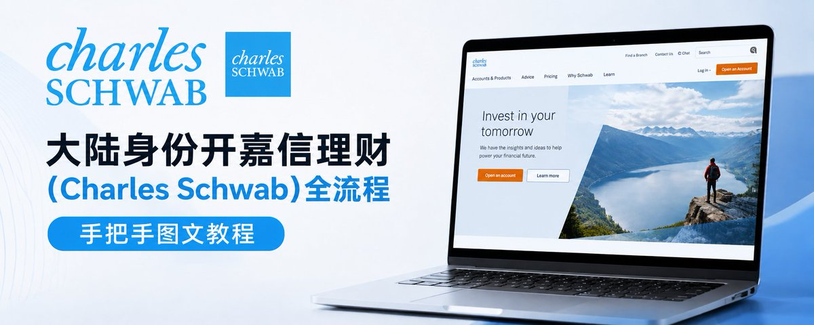
最近问开美股账户的人特别多。盈透 IBKR 那边政策收紧了，大陆身份开户现在要提供海外居住证明，门槛一下子高了不少。于是很多人把目光转向了嘉信理财。嘉信开户其实不难，就是步骤多、纯英文，新手第一次看容易劝退。这篇我把整个流程拆开，一步一步带你过，照着做基本不会卡。
一、嘉信是个什么来头
嘉信理财（Charles Schwab），总部在美国加州旧金山，1971 年由查尔斯·施瓦布创办。2019 年它把德美利证券（TD Ameritrade）收了，现在算是美国最大的在线券商，安全性这块基本不用操心。它业务很杂，咱们普通人主要用的就是它的券商功能，买美股、买 ETF。
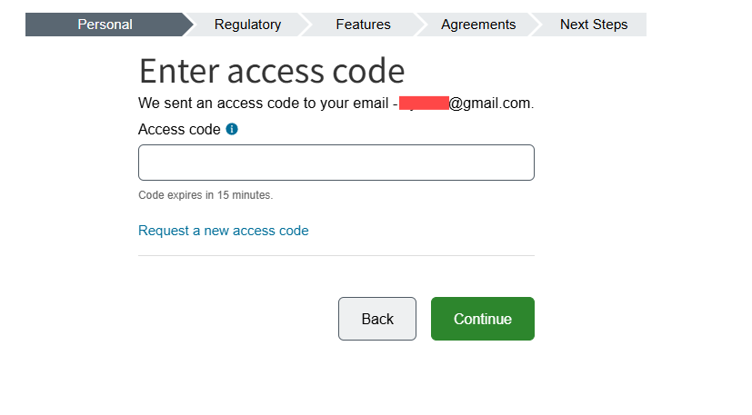
二、先掂量一下优缺点
任何券商都有两面，嘉信也一样，开之前心里有个数
好的地方：
- 受 FINRA、SEC、SIPC 监管，体量又大，资金安全没啥好担心的。
- 在线买股票、ETF 免佣金。
- 白送顶级交易软件 thinkorswim（合并德美利之后免费给所有用户用）。
- 有中文客服电话：400-120-6217，遇到问题能打中文电话，这点对新手很友好。
- 没有开户门槛，之前那个 25000 美金的最低限额早取消了。不过我提醒一句：虽然不要求，但开完最好至少入 1000 美金左右，空账户放久了有被关的风险。
不太行的地方：
- 开户流程相对啰嗦，步骤比别家多。
- 入金有点门槛。没有美国银行卡的话，得靠 Wise 或者电汇。
- 大陆身份现在申请不了 Debit 卡。我个人觉得无所谓，别为了集卡折腾，专心投资就行（为拿卡走旁门左道反而可能被封号，不划算）。
- 融资利率偏高。
- 只有美股，港股和其他市场没有。
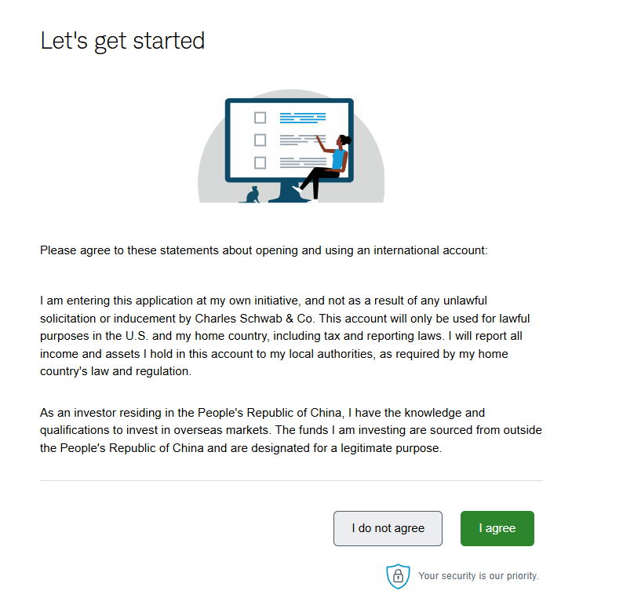
三、开户前先把材料备齐
流程比较长，先把证明材料准备齐全。
1. 身份证件：有效期内的护照（推荐用护照）。
2. 地址证明：信用卡账单、银行对账单、水电煤账单都行。（银行流水账单英文版可以在各银行App中下载）
3. 邮箱：推荐 Gmail、iCloud 这类国外邮箱。
4. 手机号：要能收境外短信。（大多数情况下国内手机号也可以）
5. 使用电脑开户，流程很繁琐，电脑页面操作方便。
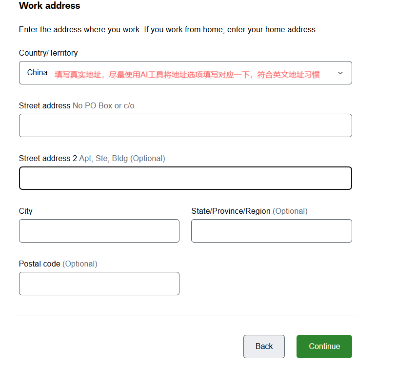
四、正式开户流程
这份图文教程会带你走完从打开开户页面到提交 W-8BEN 的全过程
全程约半个小时，按照步骤一步一步填写
开户地址：https://international.schwab.com/open-account-intro
注意：一定要走国际站。主站只给美国身份开，香港站也不建议去。认准 international 这个域名。
https://international.schwab.com/open-account-intro
点击Choose your account type，选择个人账户
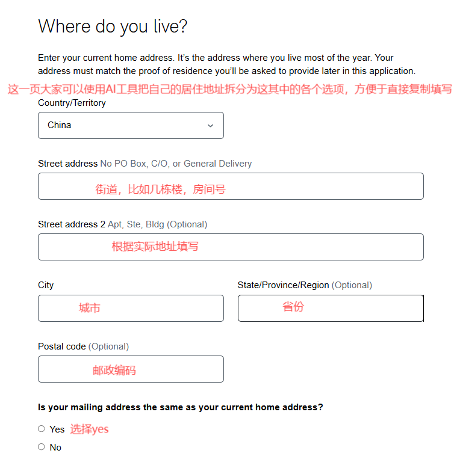
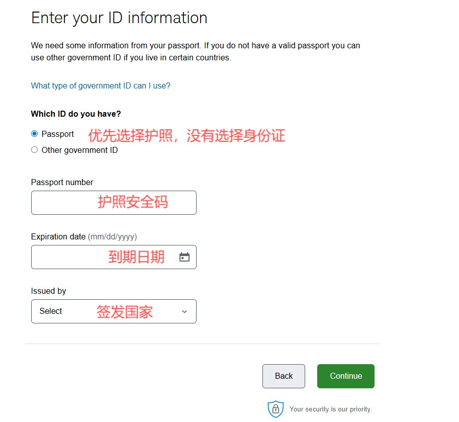
点击Get started
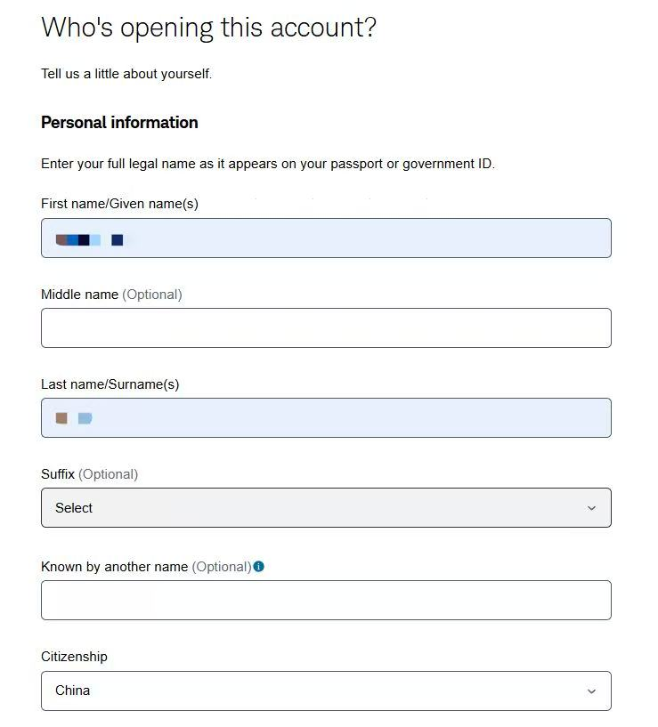
点击I agree即可
后面部分全部英文填写，不要用中文
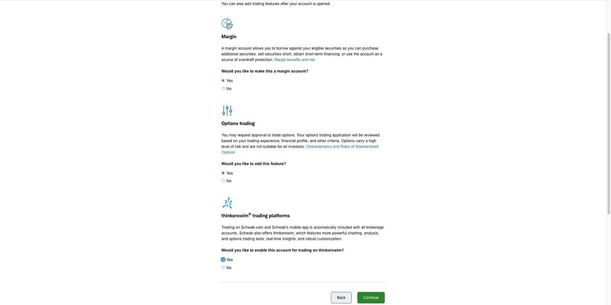
填写First name、Last name、Citizenship、Date of birth、Email和Mobile phone number，其余不用填写。准确无误填写完成后点击Continue
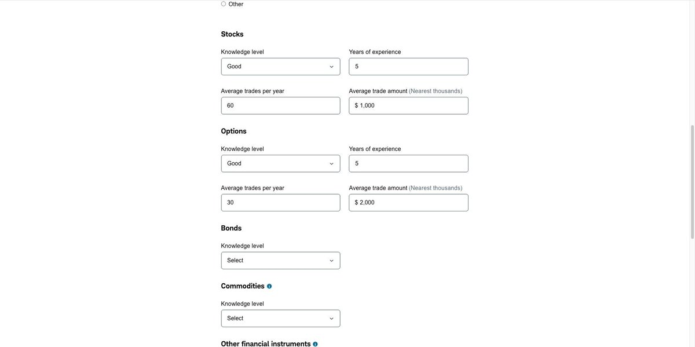
填写邮箱收到的验证码，点击Continue
| 项目 | 推荐填法 |
|---|---|
| Total net worth（总净资产） | 200,000 |
| Liquid net worth（流动净资产） | 100,000 |
| Annual income（年收入） | 50,000 |
| Years of experience（投资年限） | 6 |
| Average trades per year（年均交易次数） | 70～100 |
| Average trade amount（单笔金额） | 5,000～10,000 |
| 交易经验 | Extensive 或 Good |
设置账户的账户id和密码，id要方便自己记忆
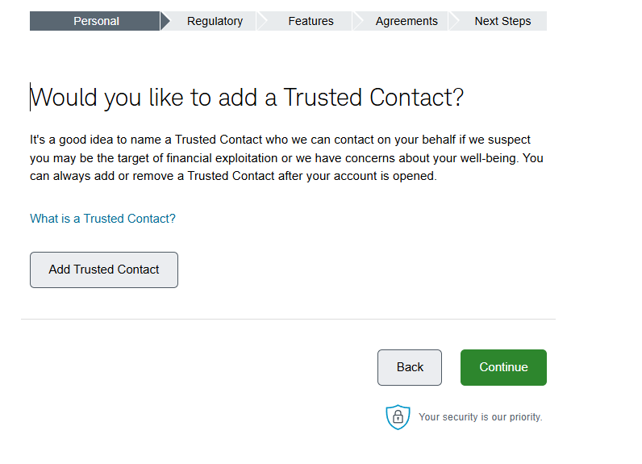
填写居住地址，不要出现中文填写
填写的居住地址一定要和地址证明文件上一致，比如身份证上的地址
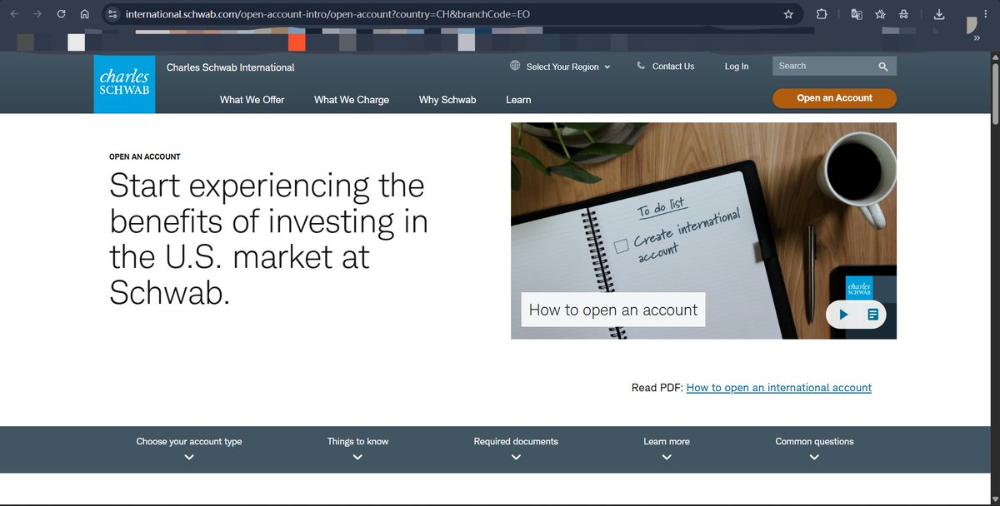
点击继续按钮，这一页添加可信联系人，可以不添加，直接点继续就可以
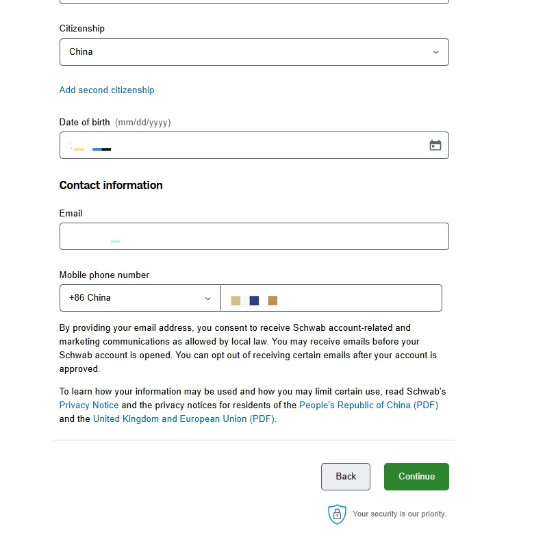
接着，下一页的两个选项都选择第一个即可
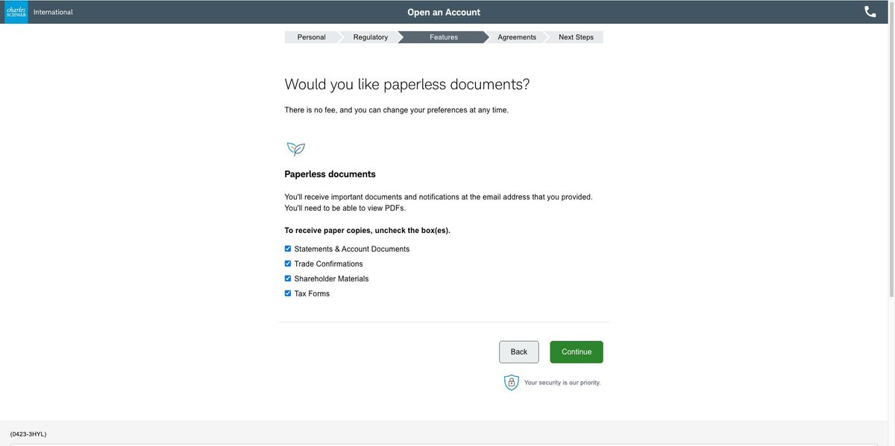
接着填工作信息，依然英文，没英文名就用拼音。在职状态对照着选：
- Employed：在职
- Self Employed：自雇
- Student：学生
- Homemaker：家庭主妇
- Retired：退休
- Not Employed：无业
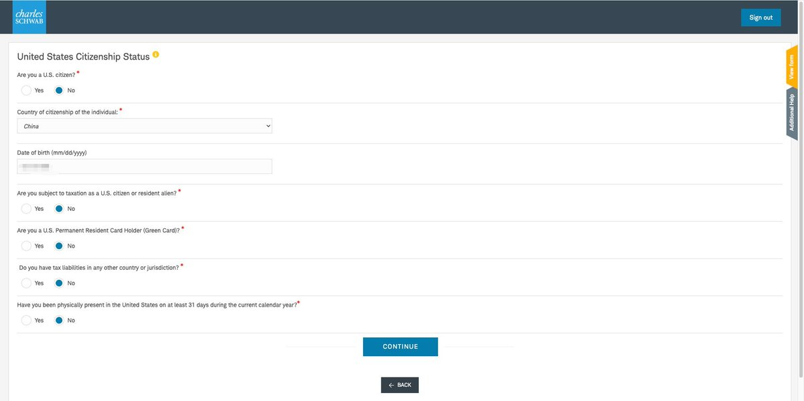
接着按照工作地址真实对应填写完成
如果还是学生，真实填写即可，不需要工作地址证明
我还是学生，我就是这样填写的，尽量不要用虚假地址
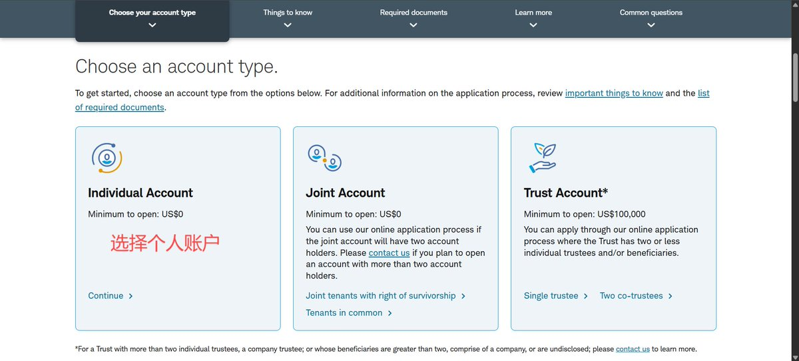
填完点击Continue
这两个选择No即可
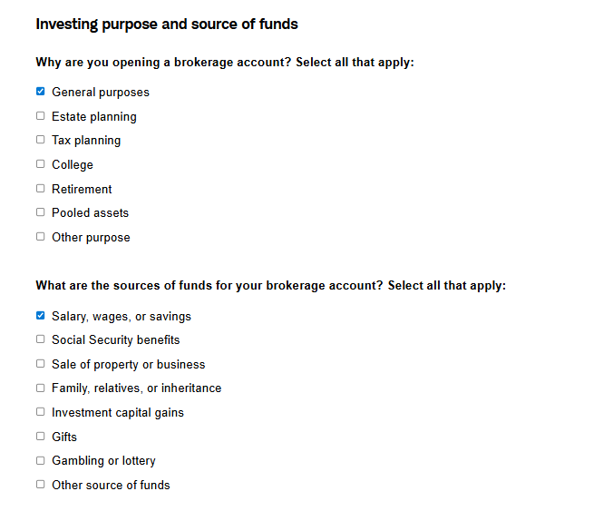
无纸化服务这几个选项全部选择，点击Continue
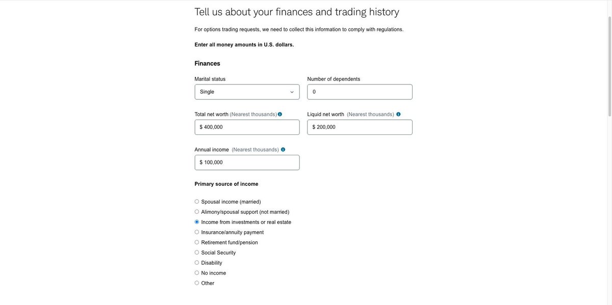
账户功能，这步选要开通的功能：
- Margin（融资账户）：建议选 Yes。
- Option Trading（期权交易）：有需要选 Yes。
- thinkorswim（交易软件）：白送的，必选 Yes。
强烈建议：哪怕你现在不打算用融资和期权，也一并申请了。嘉信开户后再升级账户权限非常麻烦，一步到位省心，直接三个全选yes。
期权级别，如果上一步开了期权，这里让你选级别。建议选第二档或第三档，最高档很难批。嘉信后续单独申请期权级别极难，能一次开就一次开到位。
建议大家直接选择Long Level 1，日常使用完全够，又可以避免不必要的麻烦
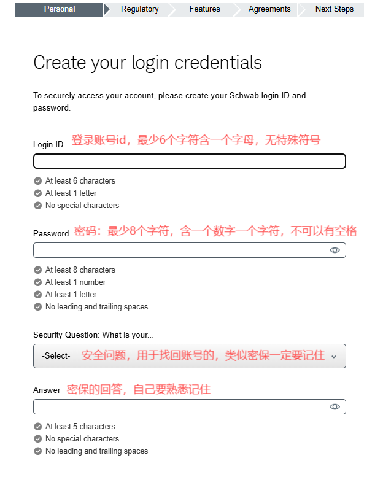
资产状况和交易经验，按实际情况填，但建议适当填大一点，方便一次通过审核。
参考值：
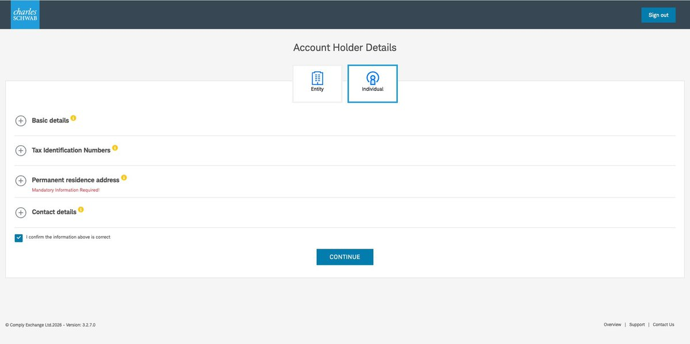
只要遵循总资产>流动资产>年收入的条件就可以
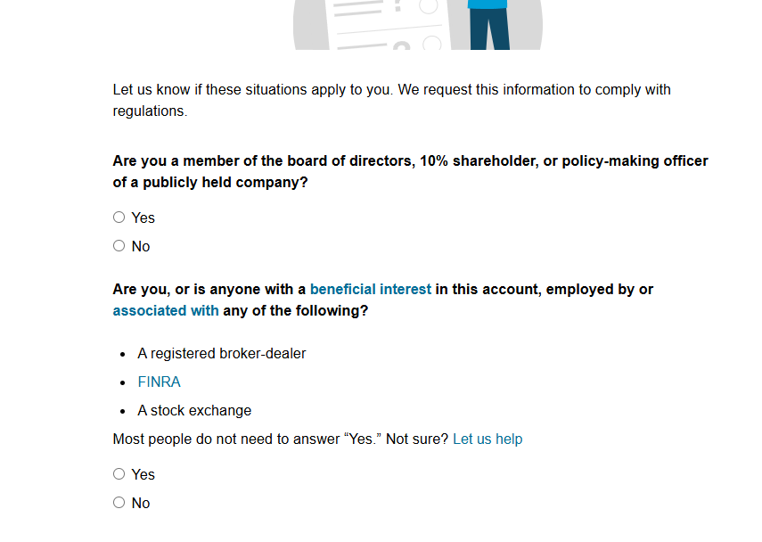
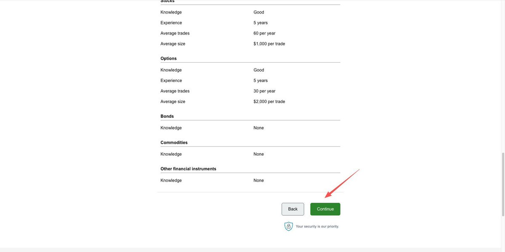
这部分数字可以参考表中的参考值或者图片中的，建议适当修改填写
填写完成后点击Continue
确认各项协议，全部打勾。其中有一个是二选一（黄色背景那个），问你是不是专业交易者，选择第一个，选 Nonprofessional（非专业）。
上传材料，这步传两样东西：
1. Passport：护照照片，要带名字和照片的那一页（资料页），拍清楚拍全。
2. Proof of residence：地址证明，带有你居住地址的银行账单等，建议使用英文版本，没有的话使用中文也不影响
注意：上传的文件名不能带中文，否则传不上去。
都传好点 Continue，进入机器审核。
看到完成界面，开户就结束了，等审核结果就行。
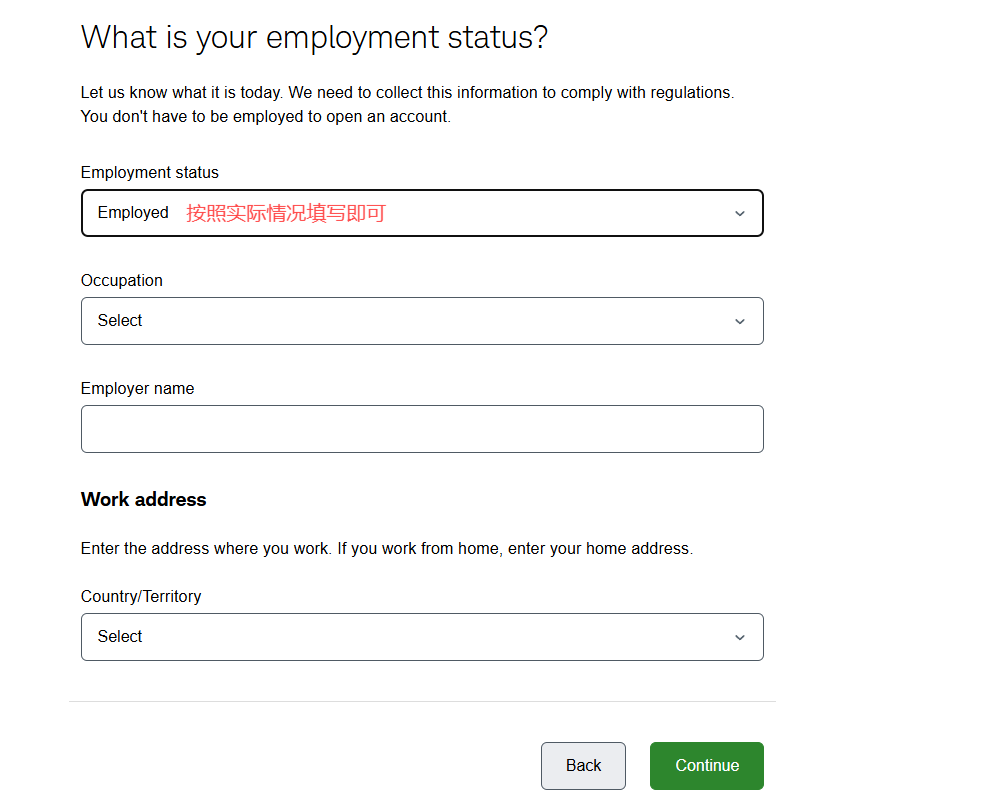
趁等审核，顺手把 W-8BEN 填了。 点界面上的 Complete Form W-8BEN 按钮，填了能享受税务优惠。这一步自带中文，但流程很长，耐心点填。
五，W-8BEN 表格填写
点击 Complete Form W-8BEN 进入下一阶段。
不填 W-8BEN 的话，所有股息收入会被预扣 30% 美国税；填了之后享受中美税收协定的 10% 优惠税率，差 20% 的税。这步千万不能跳过。
W-8BEN 表格填写
W-8BEN 是美国国税局（IRS）的官方表格，用来声明你是非美国税务居民，从而享受税收协定优惠，整个填表过程会跳转到一个叫 Comply Exchange 的合作系统。
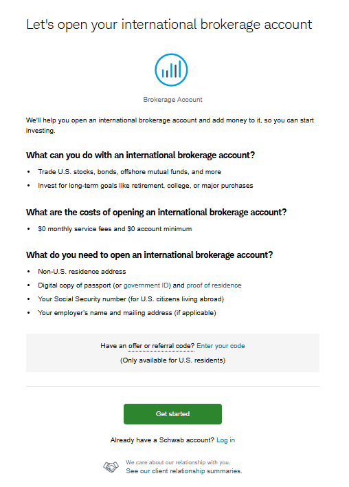
这一步是 W-8BEN 的入口页，需要选择持有人类型并展开几个子项填写。
顶部两个选项：Entity / Individual → 选 Individual
依次展开并补全以下信息（大多数信息前面已经填入，检查无误即可）：
- Basic details（基本信息：姓名、生日、国家）
- Tax Identification Numbers（税号：填写大陆居民填身份证号）
- Permanent residence address（永久居住地址）
- Contact details（联系方式）
底部勾选 I confirm the information above is correct
点击 Continue
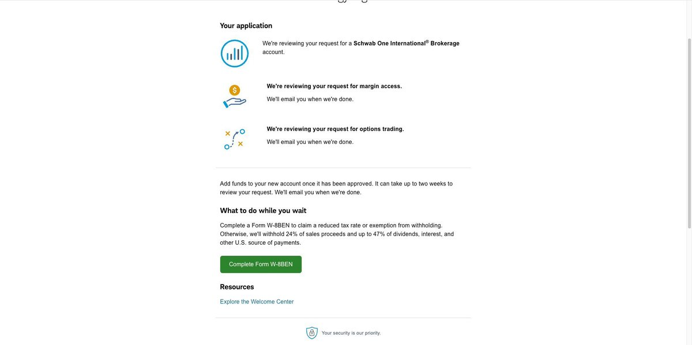
这一步是 W-8BEN 的核心。
确认你不是美国税务身份。所有问题都要按非美国身份回答。
全部选择按照图片中填写即可
这一页是 W-8BEN 的关键，必须选择No
点击 Continue
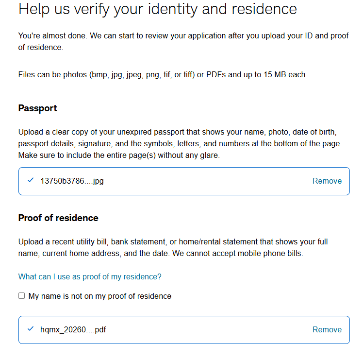
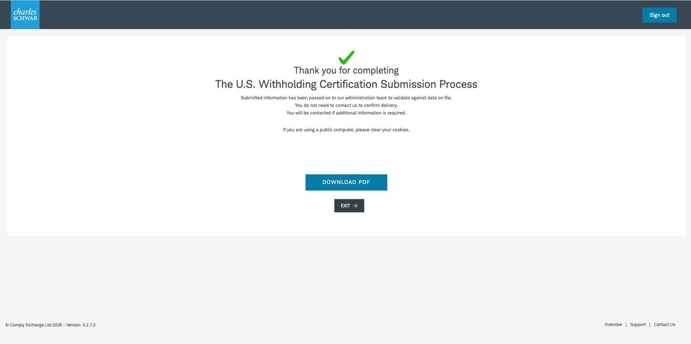
上一步完成W-8BEN的核心，全部选择按照图片中填写即可
点击Continue
生成电子签名确认码
注意：这串确认码极其重要，后面提交 W-8BEN 最后一步必须输入它，丢了就要走忘记密码流程，麻烦。密保答案区分大小写，一定要记清楚密保回答。
这是 W-8BEN 的最后签字页，填写注意事项：
- Sign name as previously provided：输入你的姓名，必须和最初填写的姓名拼音完全一致
- Enter confirmation code：输入上一步保存的确认码
- Date：自动填入当天日期
- 勾选 I confirm my acceptance of the above declarations（确认接受声明）
- 勾选 I certify that I have the capacity to sign（确认有签字权限）
- 点击 SUBMIT ELECTRONICALLY（电子提交）
W-8BEN 提交完成
看到这个页面就说明 W-8BEN 已成功提交。可以点击 DOWNLOAD PDF 把 W-8BEN 表格下载下来，方便之后信息核对。
点击 EXIT 退出
到这里整个开户申请就完成了
六，提交后我们需要等待什么
审核时间：通常 1-2 周。最近申请数量激增，可能推迟一两周。审核的结果会通过你填的邮箱通知。审核通过后会收到包含 8 位嘉信账号的欢迎邮件。
可能出现的状况：
- 被要求补材料：地址证明不清晰、签名不一致等，按邮件指示重新上传即可
- 直接通过：可以登录嘉信网站开始使用，且入金功能正常
- 被拒：极少见，一般是资料明显造假或风险评估不通过

七、怎么入金嘉信账户
嘉信入金有几种方式：
1. 有美国银行卡：直接 ACH，最省事。
2. 只有港卡：电汇入金，手续费比较高。
3. 备用方案：Wise。对大陆用户来说，没有港卡的话，Wise 往往是最现实的路子。
香港银行卡可以直接汇港币到嘉信的花旗账户，到账后自动换成美元（该账户也支持 FPS 入金）。汇款信息如下，以官网最新说明为准：
注意：入金前务必上官网核对最新汇款信息，账号细节可能变动。
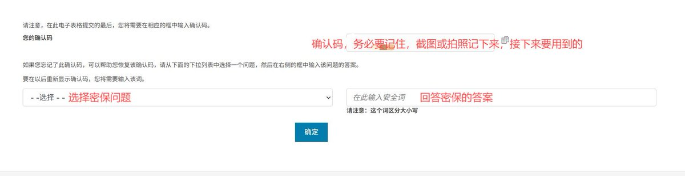
八，记得装 thinkorswim
既然开了嘉信，那个白送的顶级交易软件 thinkorswim 一定要装来用，比官方那个英文 app 好用多了，而且 thinkorswim 支持中文。
| 项目 | 内容 |
|---|---|
| 收款银行 | Citibank N.A., Hong Kong |
| SWIFT ID | CITIHKHX |
| Bank Code | 006 |
| Branch Code | 391 |
| Account Number | 62286838 |
| Account Name | Charles Schwab & Co., Inc. |
| 收款行地址 | 3 Garden Road, Central, Hong Kong |
| 备注栏填写 | Schwab 账户号（8 位）+ 账户登记姓名 |
写在最后
整个流程看着长，其实就是填表和上传材料两件事，照着步骤走，半小时内能搞完
最容易出问题的就三个点，记牢：进国际站、所有信息按护照填、上传文件名别带中文
审核一般两个星期左右，注意查收自己的邮件。急的话可以打中文客服 400-120-6217 催一下
开完账户、入了金，剩下的就是安心定投了
祝大家顺利上车！
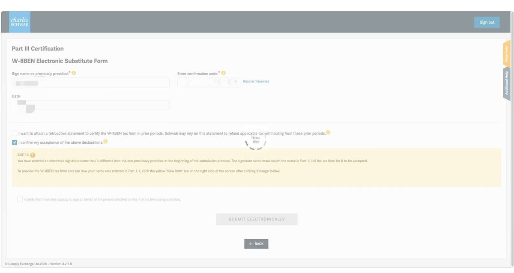
如果申请开户过程中遇到任何问题，都可以本文章下留言或者X上私信。
本文为开户操作教程，不构成投资建议。